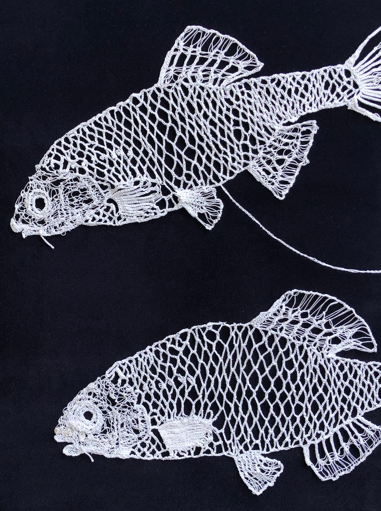
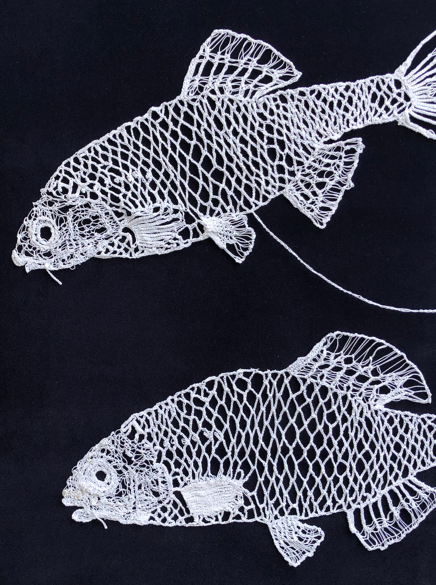
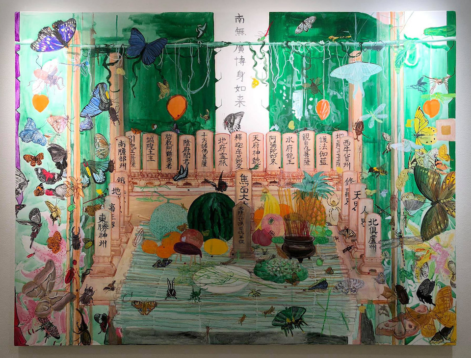

News
Exhibition
"黒沼真由美展──レースで編む日本のいきもの""Mayumi Kuronuma Exhibition
-Japanese Living Things Knitted with Lace"
令和4年9月6日（火）〜 11月13日（日）
9時30分～16時30分
Tue., Sep. 6th to Sun., Nov. 13th, 2022
9:30 - 16:30
井の頭自然文化園 動物園（本園） 資料館1階
Inokashira Zoo
〒180-0005 東京都武蔵野市御殿山1-17-6
TEL 0422-46-1100
 

Past News
Group Exhibition
"ファンダメンタルズ フェスmini"Fundamentalz Fes mini
12:00-18:00（3/19(土), 22(火)は12:00〜、3/20(日), 24(木)は15:00〜）
Saturday, March 19th to Friday, March 15th, 2022
JR上野駅13番線ホーム（東京都台東区上野7丁目）
JR Ueno Station Platform No.13（7 Ueno,Taito-ku,Tokyo）
コランダム（酸化アルミニウム Al2O3）の電子軌道
Corundum Electron Orbitals
分子模型モジュール作成 Molecular module : Akaki Kuumeri
第一原理計算、分子模型組立 first-principles calculation, Molecular model : Hannes Raebiger
電子軌道編物 Orbital knitting : Mayumi Kuronuma
コランダム（酸化アルミニウム Al2O3）の結晶格子中の様々な電子軌道。
ピンク色 : s軌道、オレンジ色 : p軌道（結合性軌道）、青色 : p軌道（反結合性軌道）。
アルミニウム原子（白色）の持つ電子がほとんど酸素原子（赤色）に取られているのが特徴的である。
Various electron orbitals in the crystal lattice of corundum (aluminum oxide Al2O3).
Pink : s orbital, orange : p orbital (bonding orbital), blue : p orbital (anti-bonding orbital).
It is characteristic that most of the electrons held by the aluminum atom (white) are taken by the oxygen atom (red).
One of the various electron orbitals in the crystal lattice of corundum
Past News
Exhibition
"Punto in Aria / Mayumi Kuronuma"Saturday, October 31 to Sunday, November 15, 2020
Diginner Gallery
〒152-0035 東京都目黒区自由が丘1-11-2
TEL 03-6421-1517
1-11-2, Jiyugaoka Meguro_ku Tokyo, 152-0035, Japan
 ↑These pieces are available at the online shop:
↑These pieces are available at the online shop:黒沼真由美 online shop @ Diginner Handcraft 
Past News
Exhibition
"Venus’ Flower Baskets / Mayumi Kuronuma"2020年8月7日(金)〜10月10日(土)
Friday, August 7 to Saturday, October 10, 2020

〒847-0017 佐賀県唐津市東唐津２丁目３
2-3, Higashi Karatsu, Karatsu City, Saga 847-0017, Japan